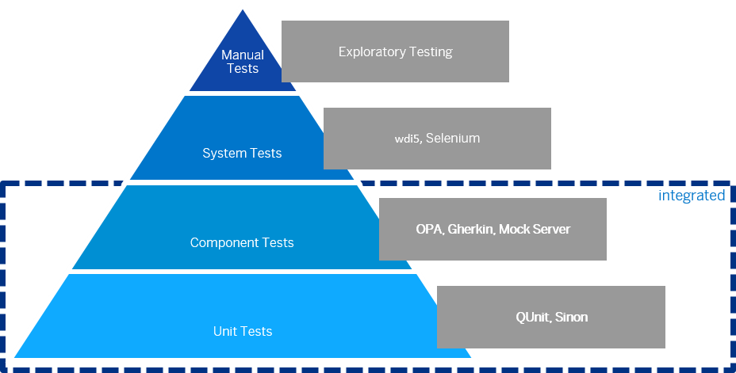

Before you start implementing your first test, you should think about how to test the different aspects of your application. The image below shows some examples of testing tools along the agile testing pyramid.

You can use a local test runner, such as Selenium or Karma, that automatically executes all tests whenever a file in the app project has been changed.
We recommend OPA5 for integration tests. OPA5 is part of OpenUI5. It is built on top of QUnit and provides good integration with OpenUI5.
WebdriverIO (WDIO) is a hugely popular end-to-end testing framework. It can work with any web app but lacks the awareness of the web framework that the application uses. wdi5, which is a WDIO plugin, bridges this gap and provides two key benefits, namely control locators and synchronization with the web framework. wdi5 uses a real browser and interacts with your app the same way a real user would.